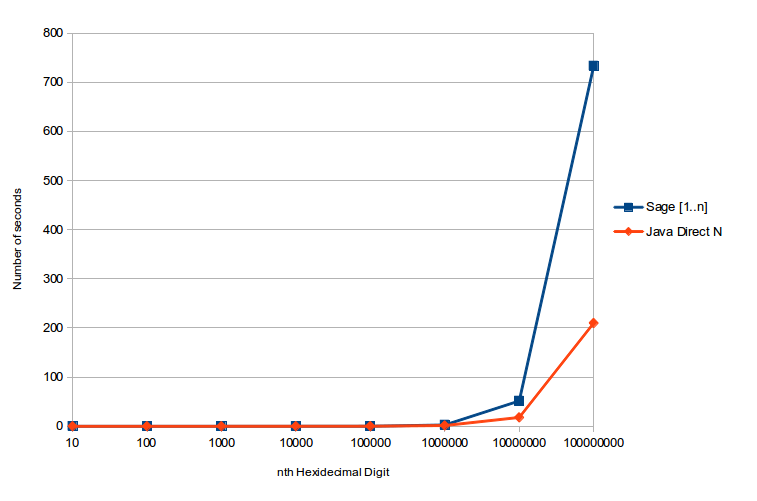
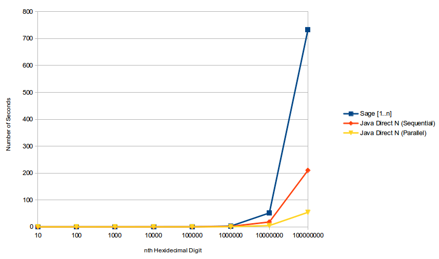

Except where otherwise noted, the contents of this document are Copyright 2014 Zachary Cava. All rights reserved. Any redistribution, reproduction, transmission, or storage of part or all of the contents in any form is prohibited without the author's expressed written permission.
Bailey-Borwein-Ploueffe, or BBP for short, is a formula that allows for the computation of any arbitrary digit of \(\pi\) without first computing the preceding digits.
The explicit formula is: $$\pi = \sum_{k=0}^{\infty}\left[\frac{1}{16^{k}}\left(\frac{4}{8k+1}-\frac{2}{8k+4}-\frac{1}{8k+5}-\frac{1}{8k+6}\right)\right]$$
This formula is a spigot algorithm, which means it is used to compute the value of a mathematical constant.
After reading a few papers and a little testing I settled on this decomposition of the equation: $$\pi = 4 * \sum_{k=0}^{\infty}\left[\left(\frac{1}{16^{k}}\right)\left(\frac{1}{8k + 1}\right)\right] - 2 * \sum_{k=0}^{\infty}\left[\left(\frac{1}{16^{k}}\right)\left(\frac{1}{8k + 2}\right)\right] \\ - \sum_{k=0}^{\infty}\left[\left(\frac{1}{16^{k}}\right)\left(\frac{1}{8k + 5}\right)\right] - \sum_{k=0}^{\infty}\left[\left(\frac{1}{16^{k}}\right)\left(\frac{1}{8k + 6}\right)\right]$$
Each of these smaller sums are faster to compute and lend to a nice and abstract generalization: $$s * \sum_{k=0}^{\infty}\left[\left(\frac{1}{b^{k}}\right)\left(\frac{1}{m*k + a}\right)\right]$$
As the graph shows, for small n the difference is neglectible, but as n grows larger the spigot clearly wins.

But we can still do a little better!
Looking at these smaller sums again we can notice that they are completely independent of each other: $$\pi = 4 * \sum_{k=0}^{\infty}\left[\left(\frac{1}{16^{k}}\right)\left(\frac{1}{8k + 1}\right)\right] - 2 * \sum_{k=0}^{\infty}\left[\left(\frac{1}{16^{k}}\right)\left(\frac{1}{8k + 2}\right)\right] \\ - \sum_{k=0}^{\infty}\left[\left(\frac{1}{16^{k}}\right)\left(\frac{1}{8k + 5}\right)\right] - \sum_{k=0}^{\infty}\left[\left(\frac{1}{16^{k}}\right)\left(\frac{1}{8k + 6}\right)\right]$$
We can hand off each smaller sum to a different CPU and calculate the pieces in parallel!
As expected, on a machine with enough cores, the time for n direct is divided by about the number of small sums

Just like the smaller sums can be generalized, the entire function can be generalized and has been: $$\alpha = \sum_{k=0}^{\infty}\left[\left(\frac{1}{b^{k}}\right)\left(\frac{p(k)}{q(k)}\right)\right]$$